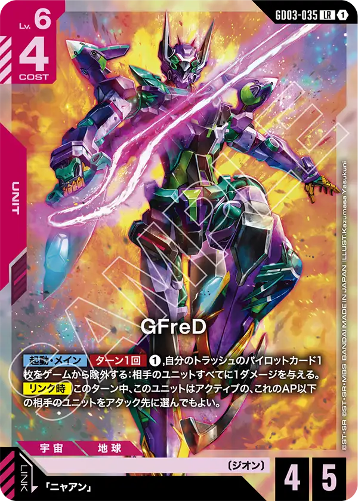
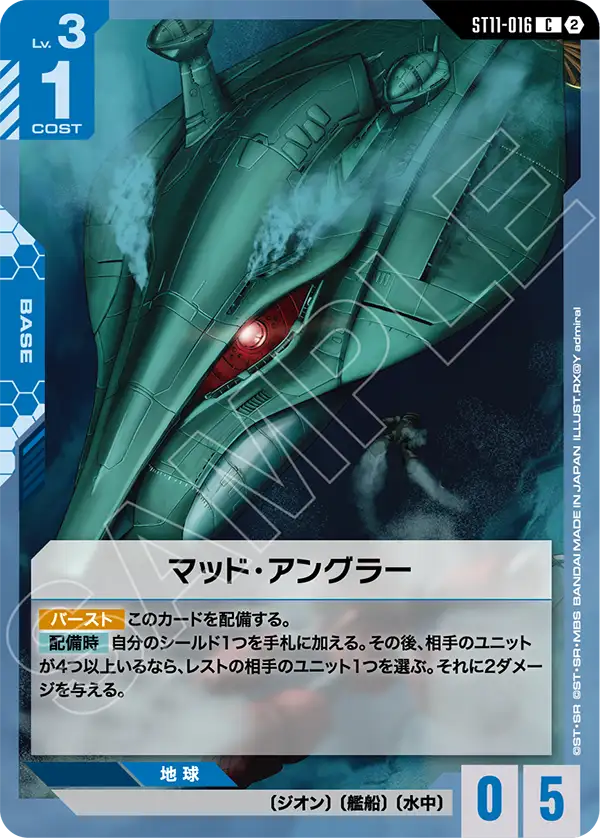
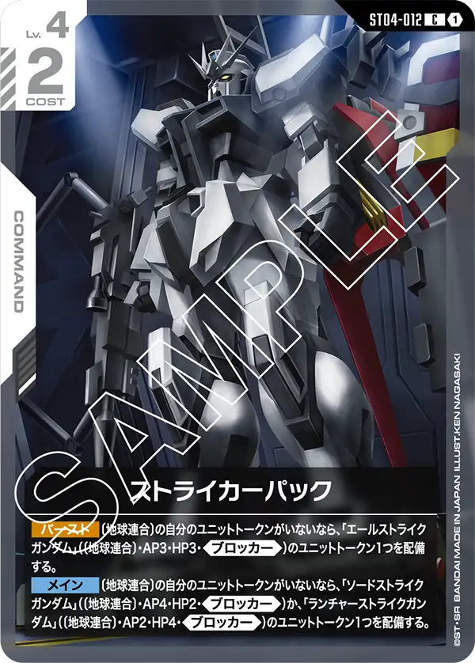

10/12〜10/18に開催された99大会の入賞944デッキを、前週（10/5〜10/11・94大会・904デッキ）と比べた。対象はシリアルカードチャレンジ 10月。入賞デッキは大会結果に順位が載ったデッキすべてで、上位4位だけを使う相性表とは母数が違う。
デッキカラー別の入賞割合
| デッキカラー | 前週 | 今週 | 差 |
|---|---|---|---|
| → 赤/白 | 23.3% (211) | 23.7% (224) | +0.4pt |
| → 緑/紫 | 18.7% (169) | 17.8% (168) | −0.9pt |
| ↗ 青/白 | 14.7% (133) | 16.4% (155) | +1.7pt |
| ↘ 青/紫 | 18.1% (164) | 15.8% (149) | −2.4pt |
| → 青/緑 | 12.5% (113) | 13.3% (126) | +0.8pt |
| → 緑/白 | 3.0% (27) | 4.1% (39) | +1.1pt |
| → 赤/紫 | 3.0% (27) | 3.5% (33) | +0.5pt |
| → 青/赤 | 3.7% (33) | 2.9% (27) | −0.8pt |
| → その他（2種） | 3.0% (27) | 2.4% (23) | −0.6pt |
矢印は前週からの割合の差で、↑ +4pt以上、↗ +1.5pt以上+4pt未満、→ −1.5pt超+1.5pt未満、↘ −4pt超−1.5pt以下、↓ −4pt以下。
デッキカラーごとの採用カード
採用率は、そのデッキカラーの入賞デッキのうちそのカードを1枚以上入れた割合。急上昇は、両方の週で30デッキ以上あるデッキカラーで、採用率が10pt以上上がったカードのうちいちばん上がった1枚。
赤/白 →（224デッキ）



赤白
前回と同じGFreDが急上昇へ登場
前回より高い採用率になり採用率は60%を超える形に
アグロ特有の低HP複数展開に対しての回答として採用されている
GD06の発売まではこのカードがアグロ対策を担うだろう
GD06はシュトゥルム・ウント・ドランク[GD06-119]がアグロの対策になる可能性がある。
発売後の構築の変化はまた確認したい
緑/紫 →（168デッキ）


緑紫
急上昇は広域殲滅
緑紫自体が低レベルのカードで序盤動く形が多いがそれ以上に他のアグロを警戒してのことだろう
緑がキュベレイやジオングなどの高レベルカードの採用を行うことができることから全体を除去してから展開と言う形を取るようになったのだろう
広域展開自体のレベルは高いが序盤をユニットの力で過ごす事ができるからこそ採用されていると感じる
青/白 ↗（155デッキ）



青白
終盤にストライクフリーダムを配備して戦う後ろよりのデッキにはアグロの対策は必須と言えよう
マッド・アングラーがその鍵を担う可能性を多くのプレイヤーが感じた結果になると見える
赤白でも書いたように低HP複数展開を行うアグロに対してレベル3から対応ができるこのカードは優秀と言っても過言では無い
与えるダメージも2と展開してくるレベル2以下のユニットのHPは2ということで効果の利用条件を満たせば確実に1体ユニットを破壊できるのでアグロ側もこのカードの警戒をしておく必要があるだろう
GD06ではリックディアズ互換カードのキャノン・イルフート[GD06-077]やブロッカー効果を複数回起動できるハリー・オード[GD06-097]も登場するためまだまだこのデッキの改良は続くだろう
青/紫 ↘（149デッキ）


青紫
急上昇はアムロ・レイと言うことで要因はやはりアグロ型があるだろう
今までは三日月・オーガス[ST05-010]が採用されていたこのデッキカラーからアムロへ切り替わっていることを見せてくれているだろう
ガンダム+アムロの組み合わせは単にリンクしつつ相手をレストすることだけが強いのでは無く味方のAPを上げることも含めて強いと言うことがより分かるデッキになりつつある
急に勢いを出してきたデッキと言うこともあり他のデッキからは非常に強く見られており、苦戦を強いられているがGD06ではまた多くの採用検討カードがいるため今後も要注目のデッキである
青/緑 →（126デッキ）
緑/白 →（39デッキ）

赤/紫 →（33デッキ）


青/赤 →（27デッキ）
運営のひとこと
その他は急上昇カードは無いものの様々なデッキが入賞している。
すべてのデッキが均等に勝てているわけでは無いが、新カードの登場によって大きく入賞率が上昇する可能性はあるため新弾のカードは注目しておいて損は無いだろう
もっと詳しく見る
大会ごとの結果やデッキタイプの割合は、シリアルカードチャレンジ 10月の環境分析で見られる。
数え方
週は月曜から日曜で区切る。デッキリストが公開されていない入賞デッキは数に入れていない（今週0件・前週0件）。
※数字は当サイトが公式の大会結果から自動で集めたデータの集計。誤りに気づいたらXアカウント（@gcg_stats）のDMへ。